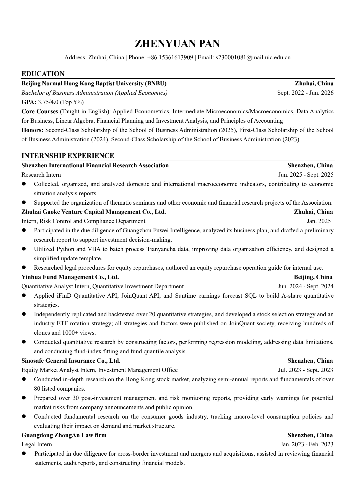
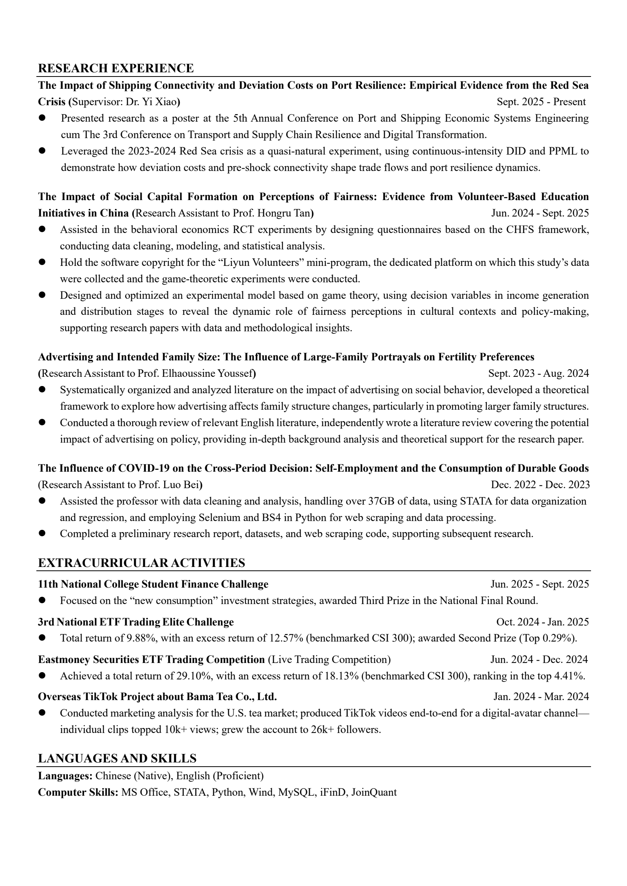

Zhenyuan Pan
M.A. Economics Candidate at NYU
M.A. Economics Candidate at NYU
Hands-on market experience through internships, strategy research, and live / simulated market practice.
From market signals to economic shocks — empirical analysis of how real economies absorb disruption.
A compact archive of my academic path, professional experience, and contact points.

